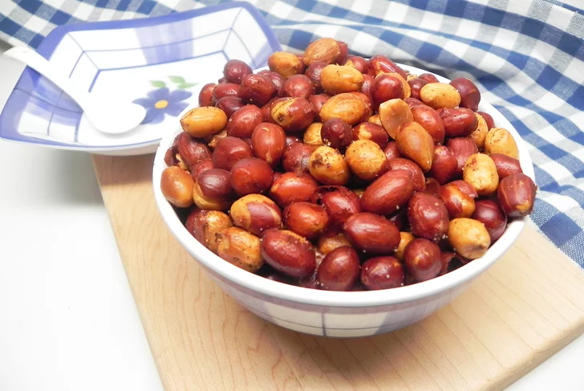

Ingradients
- 2 tablespoons olive oil
- 3 teaspoons seafood seasoning (such as Old Bay®)
- ½ teaspoon cayenne pepper
- 8 ounces raw Spanish peanuts
- salt to taste
Steps:
- Preheat an air fryer to 320 degrees F (160 degrees C).
- Whisk together olive oil, seafood seasoning, and cayenne pepper together in a large bowl. Add peanuts and stir until peanuts are evenly coated. Transfer peanuts to the air fryer basket.
- Cook peanuts in the air fryer for 10 minutes. Toss and cook for an additional 10 minutes.
- Remove the basket from the air fryer and salt peanuts to taste. Toss peanuts one last time and cook 5 additional minutes. Transfer peanuts to a paper towel lined plate and let cool.